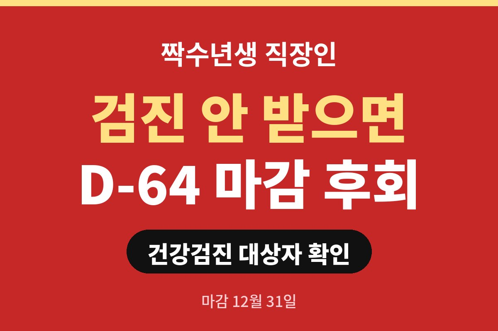
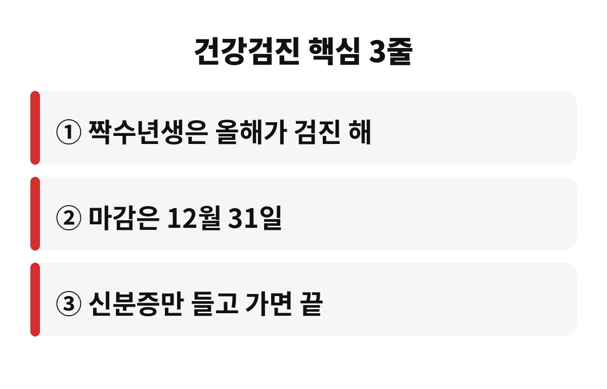
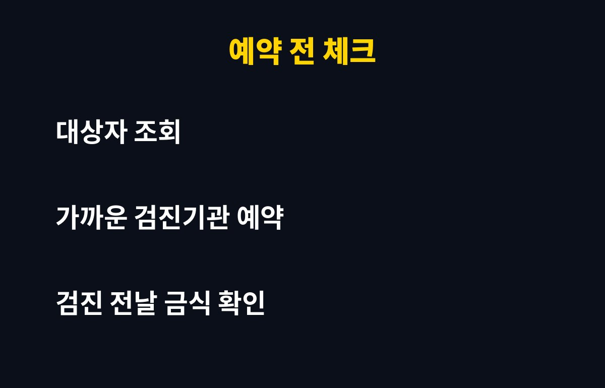

건강검진 대상자 중 짝수년도에 태어난 분들은 올해 검진 마감이 12월 31일이고, 오늘(10월 28일) 기준으로 딱 64일 남았습니다. 올해 아직 안 받은 짝수년생 직장인이라면, 이 기간을 넘기면 내년으로 미뤄진다는 사실 알고 계셨나요?
2년에 한 번 받는 검진이라 "작년에 받았나? 올해였나?" 헷갈리기 쉽죠. 그래서 건강검진 대상자 여부부터 확인하는 게 첫 단계입니다.
국민건강보험공단 홈페이지나 'The건강보험' 앱에 로그인하면 올해 검진 대상 여부와 검진 항목이 바로 보입니다. 로그인이 번거로우면 공단 고객센터(1577-1000)에 전화해도 알려줍니다.
일반적으로 건강검진 대상자는 건강보험 가입자(직장·지역)와 만 19세 이상 피부양자 중 해당 연도에 검진 차례가 돌아온 분입니다. 사무직은 2년에 한 번, 비사무직은 매년 받는 구조예요. 짝수년생이라면 올해가 검진 해라고 보시면 됩니다.
일반 검진의 기본 항목은 공단이 비용을 부담해서 본인 돈 없이 받을 수 있습니다. 반대로 올해 안 받으면 그 혜택은 사라지고, 다음 검진 차례는 내년이 아니라 2년 뒤로 밀리는 경우가 많죠. 병원에서 같은 검사를 자비로 받으면 훨씬 비쌉니다.
무엇보다 고혈압·당뇨·고지혈증은 증상이 거의 없어서, 검진이 아니면 발견하기 어렵습니다. "나는 건강한데"라고 생각하는 분일수록 한 번 확인해 볼 가치가 있어요.
기본 검사는 키·체중·허리둘레, 혈압, 혈액검사(혈당·콜레스테롤·간기능·신장기능), 소변검사, 흉부 X선 등입니다. 나이에 따라 추가 검사가 붙어요.
| 구분 | 대상 나이(대략) | 주기 |
| 위암 검진 | 만 40세 이상 | 2년 |
| 대장암 검진 | 만 50세 이상 | 1년 |
| 유방암 검진 | 만 40세 이상 여성 | 2년 |
| 자궁경부암 검진 | 만 20세 이상 여성 | 2년 |
암검진은 일반 검진과 같은 날 함께 받을 수 있고, 일부는 본인부담금이 있을 수 있습니다. 정확한 대상과 비용은 공단 조회 화면에서 꼭 확인하세요.

12월은 검진 예약이 몰려서 원하는 날짜를 잡기 어렵습니다. 그래서 11월 안에 끝내는 게 제일 편해요. 순서는 간단합니다.
첫째, 공단 앱에서 건강검진 대상자 조회. 둘째, 집이나 회사 근처 검진기관 전화 예약. 셋째, 검진 전날 밤 9시 이후 금식하고 당일 신분증 챙기기. 이 세 가지면 끝입니다. 회사에 연차나 검진 휴가가 있는지도 같이 물어보세요.

결과지에서 수치가 정상 범위를 벗어났다면 겁먹지 말고 가까운 병원에서 추가 상담을 받아 보세요. 한 번의 검진이 몇 년 뒤의 큰 병원비를 막아 줄 수도 있으니까요. 혹시 지난 검진 때 미루다가 놓친 경험, 있으신가요? 댓글로 알려 주세요.
도움이 되셨다면 구독해 두세요. 이런 생활 건강 정보를 계속 챙겨 드릴게요.
※ 본 글은 일반적인 정보이며, 개인별 검진 대상·항목·비용은 건강보험공단에서 확인하시고 건강 문제는 전문의 상담을 권장합니다.